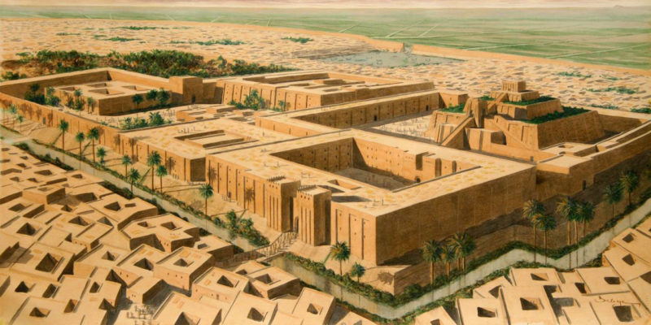

El primer rastro del vidrio usado por el hombre, se remonta hace más de 7,000 años, en Mesopotamia, y su primer registro siendo usado como frasco es en pequeños frascos egipsios de hace más de 4,000 años.

El sonido caracteístico del vidrio
El vidrio tiene un sonido muy agudo y diferente a el de cualquier otro material al romperse, escucha.
¿No me crees que ese es vidrio? Bueno, Mira.
¿Por que es tan usado?
Una de las razones de el ¿Por que es tan usado?, es su gran versatilidad, al ser un material tan duro y no permeable, es muy util para guardar todo tipo de liquidos, además de que no cambia las características de lo que contiene en el.
De hecho se han encontrado frascos de vidrio con miel, de hace miles de años.